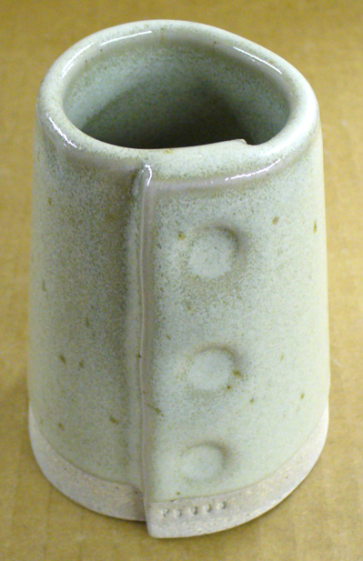
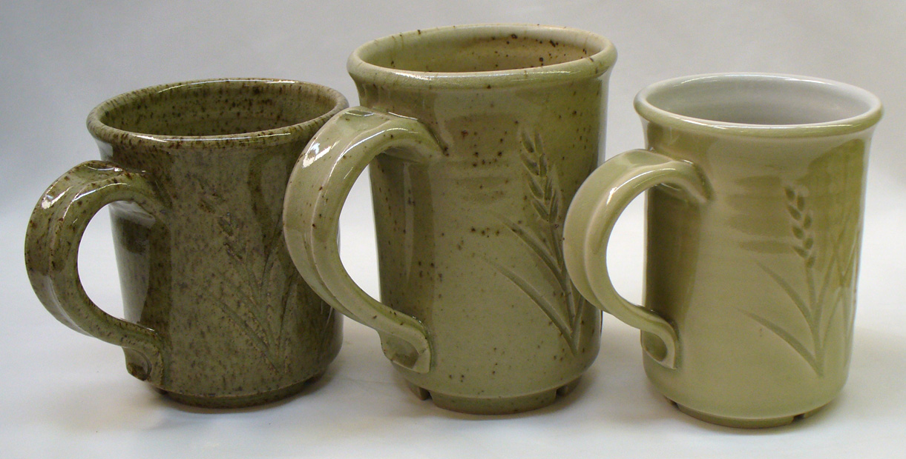
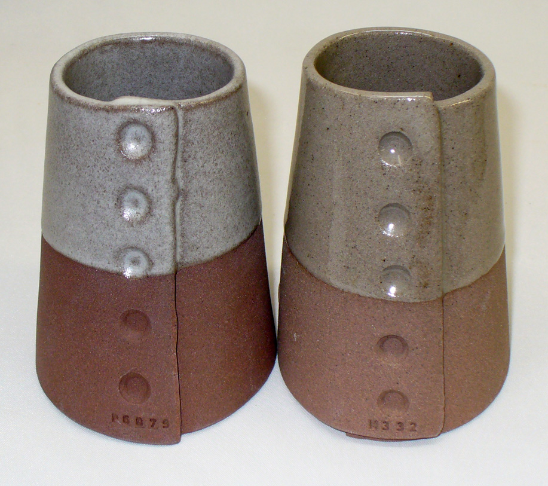
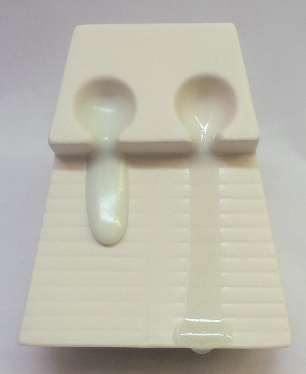

MgO (Magnesium Oxide, Magnesia)
Data
| Co-efficient of Linear Expansion | 0.026 |
|---|---|
| Frit Softening Point | 2800C (From The Oxide Handbook) |
Notes
-Together with SrO, BaO, and CaO, it is one of the Alkaline Earth group of oxides. It has a cubic crystal structure. Zircon and Magnesia melt at 2800C, making them the highest melting oxides. Remarkably, MgO readily forms eutectics with other oxides to produce melts at surprisingly low temperatures.
-When employed as a secondary flux in high-temperature glazes, it melts well (beginning action about 1170C) and can be present in glossy glazes (as long as not over supplied). In frits at medium temperatures, it acts similarly.
-MgO is best known for its ability to matte glazes in larger proportions (e.g. 0.3-0.4 molar). The mechanism of this is different at higher temperatures (vs. low). At medium and high temperatures, it is sourced mainly from dolomite and talc, as the proportion of MgO is increased (against other fluxes) the viscosity (and surface tension) of the melt increases, and the glaze produced is more matte. As proportions rise even further (e.g. above 0.4 molar) the glaze becomes more opaque (as a product of incomplete glass development). For this reason, MgO is one of the most effective matting agents. For example, glazes having almost no alumina, very slow silica, and very high boron that would otherwise run right off the ware can be completely stabilized with an MgO content of 0.3-0.4 molar. Unlike a refractory stabilizer, in many formulations MgO does not significantly impede melting and glass development when it mattes the glaze. At lower temperatures, the matting mechanism of MgO is that it simply stiffens and opacifies the glaze due to its refractory nature. It is common to source it from magnesium carbonate in these ranges. Like CaO, MgO it is very refractory by itself, around 2800C melting point!
-Since the surface tension of MgO-containing melts does increase with its proportion, this can cause crawling if the glaze laydown has any shrinkage issues. This is less of a problem in reduction and most problematic in low fire.
-MgO is very valuable for its lowering effect on glaze thermal expansion (this is one reason why MgO mattes can be made very resistant to crazing). Low expansion frits are invariably based on MgO. Theoretically, surface character is best maintained when introducing MgO into a glaze to replace calcia, baria, and zinc. Still, replacing the alkalis with MgO is the single most effective strategy to reduce crazing, this works so well because oxide molecules of the highest possible expansion are being replaced with ones of the lowest. But this must be done with caution since having more than about 0.1 molar will begin to affect gloss. Also, you will have to determine if color is detrimentally affected. Yet many liner glazes have plenty of gloss and color where this is not an issue, they are excellent candidates for MgO strategies to deal with crazing issues.
-MgO is a light oxide and generally is a poor choice for glazes to host bright-colored oxides. That being said, our G2934 base recipe works fantastic with bright-colored stains. MgO glazes are a natural to host earth-tone and pastel colors, especially in high-temperature reduction firing. MgO in the overglaze may be hostile to some under-glaze colors.
-Since MgO stiffens the melt it can be used simply to check glaze fluidity (in a manner similar to alumina) and to prevent devitrification (the tendency to produce crystalline surfaces). When mixed with CaO, it is not as refractory.
-It can act as a catalyst in low-temperature bodies, assisting the conversion of quartz to higher expansion cristobalite (which reduces crazing).
-Does not volatilize.
-MgO helps with cobalt purples, cobalt pinks and nickel greens. Hostile to chrome reds.
Comparing two glazes having different mechanisms for their matteness

This picture has its own page with more detail, click here to see it.
These are two cone 6 matte glazes (shown side by side in an account at Insight-live). G1214Z is high calcium and a high silica:alumina ratio. It crystallizes during cooling to make the matte effect and the degree of matteness is adjustable by trimming the silica content (but notice how much it runs). The G2928C has high MgO and it produces the classic silky matte by micro-wrinkling the surface, its matteness is adjustable by trimming the calcined kaolin. CaO is a standard oxide that is in almost all glazes, 0.4 is not high for it. But you would never normally see more than 0.3 of MgO in a cone 6 glaze (if you do it will likely be unstable). The G2928C also has 5% tin, if that was not there it would be darker than the other one because Ravenscrag Slip has a little iron. This was made by recalculating the Moore's Matte recipe to use as much Ravenscrag Slip as possible yet keep the overall chemistry the same. This glaze actually has texture like a dolomite matte at cone 10R, it is great. And it has wonderful application properties. And it does not craze, on Plainsman M370 (it even survived a 300F-to-ice water IWCT test). This looks like it could be a great liner glaze.
A magnesia matte that breaks on contours

This picture has its own page with more detail, click here to see it.
GR10-G Silky magnesia matte cone 10R (Ravenscrag 100, Talc 10, Tin Oxide 4). This is a good example silky matte mechanism of high MgO. The Ravenscrag:Talc mix produces a good silky matte, the added tin appears to break the effect at the edges.
GR10-B Ravenscrag transparent glaze (with 10 talc)

This picture has its own page with more detail, click here to see it.
Because this glaze employs 10% dolomite instead of 10% calcium carbonate it has a lower thermal expansion and is less likely to craze. While the dolomite is contributing MgO, which normally mattes glazes, there is not enough to do it here.
The difference between dolomite and calcium carbonate in a glaze

This picture has its own page with more detail, click here to see it.
These glaze cones are fired at cone 6 (without slow cooling) and have the same recipe: 20 Frit 3134, 21 EP Kaolin, 27 calcium carbonate, 32 silica. The difference: The one on the left uses dolomite instead of calcium carbonate. Notice how the MgO from the dolomite mattes the surface (without slow cooling) whereas the CaO from the calcium carbonate produces a brilliant gloss (because it needs slow cooling).
Frits melt so much better than raw materials

This picture has its own page with more detail, click here to see it.
Feldspar and talc are both flux sources (glaze melters), they are common in all types of stoneware glazes. But their fluxing oxides, Na2O and MgO, are locked in crystal structures that neither melt early or supply other oxides with which they like to interact. The pure feldspar is only beginning to soften at cone 6. Yet the soda frit is already very active at cone 06! As high as cone 6, talc (the best source of MgO) shows no signs of melting activity at all. But a high-MgO frit is melting beautifully at cone 06! The frits progressively soften, starting from low temperatures, both because they have been premelted and have significant boron content. In both, the Na2O and MgO are free to impose themselves as fluxes, actively participating in the softening process.
Ceramic Oxide Periodic Table

Pretty well all common traditional ceramic base glazes are made from less than a dozen elements (plus oxygen). Go to the full picture of this table and click or tap each of the oxides to learn more (on its page at digitalfire.com). When materials melt, they decompose, sourcing these elements in oxide form. The kiln builds the glaze from them, it does not care what material sources what oxide (assuming, of course, that all materials do melt or dissolve completely into the melt to release those oxides). Each of these oxides contributes specific properties to the glass. So, you can look at a formula and make a good prediction of the properties of the fired glaze. And know what specific oxide to increase or decrease to move a property in a given direction (e.g. melting behavior, hardness, durability, thermal expansion, color, gloss, crystallization). And know about how they interact (affecting each other). This is powerful. A lot of ceramic materials are available, hundreds - that is complicated when individual materials source multiple oxides. Viewing a glaze as a simple unity formula of ceramic oxides is just simpler.
Devitrification of a transparent glaze

This picture has its own page with more detail, click here to see it.
This glaze consists of micro fine silica, calcined EP kaolin, Ferro Frit 3249 MgO frit, and Ferro Frit 3134. It has been ball milled for 1, 3, and 6 hours with these same results. Notice the crystallization that is occurring. This is likely a product of the MgO in the Frit 3249. This high boron frit introduces it in a far more mobile and fluid state than would talc or dolomite and MgO is a matting agent (by virtue of the micro crystallization it can produce). The fluid melt and the fine silica further enhance the effect.
Two stains. 4 colors. Will the guilty oxide please step forward.

This picture has its own page with more detail, click here to see it.
These pairs are G2934 matte and G2916F glossy cone 6 base glaze recipes. The left pair has 5% maroon stain added, the right pair 5% purple stain. Why? The Mason Colorworks reference guide has the same precaution for both stains: the host glaze must be zincless and have 6.7-8.4% CaO (this is a little unclear, it is actually expressing a minimum, the more the CaO the better). The matte recipe calculates to 11% CaO, the glossy to 9%. So there is enough CaO. The problem is MgO (it is the mechanism of the matteness in the left two), it impedes the development of both colors (although not mentioned on the Mason docs).
Substituting MgO for BaO in a matte will also make a matte, right? Wrong.

This picture has its own page with more detail, click here to see it.
Left: G2934 magnesia cone 6 matte (sold by Plainsman Clays). Right (G2934D): The same glaze, but with 0.4 molar of BaO (from Ferro Frit CC-257) substituted for the 0.4 MgO it had. The MgO is the mechanism of the matte effect. Barium also creates mattes, but only if the chemistry of the host glaze and the temperature are right. In addition, barium mattes are normally made using the raw carbonate form, not a frit. In fritted form, barium can be a powerful flux when well dissolved in the melt and boron is present. This glaze is actually remarkably transparent. However, if this was fired lower it could very well matte.
Links
| Articles |
Bringing Out the Big Guns in Craze Control: MgO (G1215U)
MgO is the secret weapon of craze control. If your application can tolerate it you can create a cone 6 glaze of very low thermal expansion that is very resistant to crazing. |
| Articles |
The Right Chemistry for a Cone 6 Magnesia Matte
|
| Materials |
Dolomite
An inexpensive source of MgO and CaO for ceramic glazes, also a highly refractory material when fired in the absence of reactant fluxes. |
| Materials |
Talc
A source of MgO for ceramic glazes, a flux or thermal expansion additive in clay bodies, also used in the manufacture of cordierite. |
| Materials |
Light Magnesium Carbonate
A refractory feather-light white powder used as a source of MgO and matting agent in ceramic glazes |
| Materials |
Magnesite
|
| Materials |
Frit
Frits are made by melting mixes of raw materials, quenching the melt in water, grinding the pebbles into a powder. Frits have chemistries raw materials cannot. |
| Materials |
Magnesium Oxide
|
| Glossary |
Alkaline Earths
Refers to a group of ceramic fluxing oxides that contribute similar properties to fired glazes. They contrast with the alkalis which are stronger fluxes. |
| Glossary |
Magnesia Matte
Magnesia matte ceramic glazes are “microstructure mattes” while calcia mattes are “crystal mattes”. They have a micro-wrinkle surface that forms from a high viscosity melt and microscopic phase separation, both of which prevent levelling on freezi |
| Glossary |
Co-efficient of Thermal Expansion
The co-efficient of thermal expansion of ceramic bodies and glazes determines how well they fit each other and their ability to survive sudden heating and cooling without cracking. |
| Glossary |
Calculated Thermal Expansion
The thermal expansion of a glaze can be predicted (relatively) and adjusted using simple glaze chemistry. Body expansion cannot be calculated. |
| Glossary |
Ceramic Oxide
In glaze chemistry, the oxide is the basic unit of formulas and analyses. Knowledge of what materials supply an oxide and of how it affects the fired glass or glaze is a key to control. |
| Glossary |
Flux
Fluxes are the reason we can fire clay bodies and glazes in common kilns, they make glazes melt and bodies vitrify at lower temperatures. |
| Properties | Glaze Variegation |
| Oxides | CaO - Calcium Oxide, Calcia |
Mechanisms
| Glaze Matteness | Magnesia is well known for the pleasant vellum 'fatty matte' and 'hares fur' tactile and visual effects that it produces around 1200C, especially in reduction firing (dolomite matte). The mechanism is phase separation of the suddenly melting MgO, but MgO can also produce matte effects at lower temperatures as a refractory melt-stiffening additive. |
|---|
 PayPal | No tracking, No ads, No paywall, No transient content! Just organized, concise information constantly updated and improved. Was this helpful? Consider supporting me. |
| By Tony Hansen Follow me on        |  |
Got a Question?
Buy me a coffee and we can talk 

https://digitalfire.com, All Rights Reserved
Privacy Policy